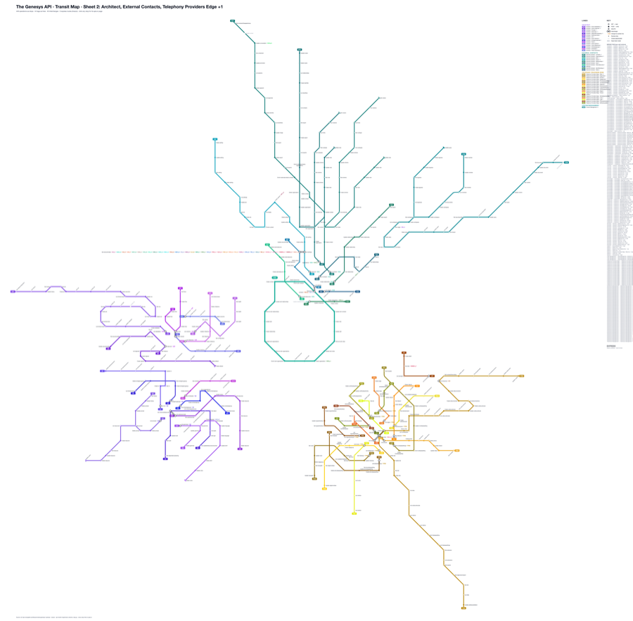
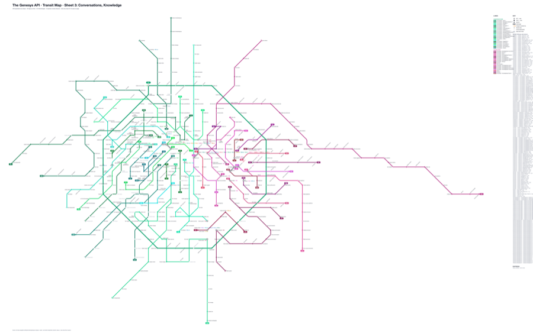
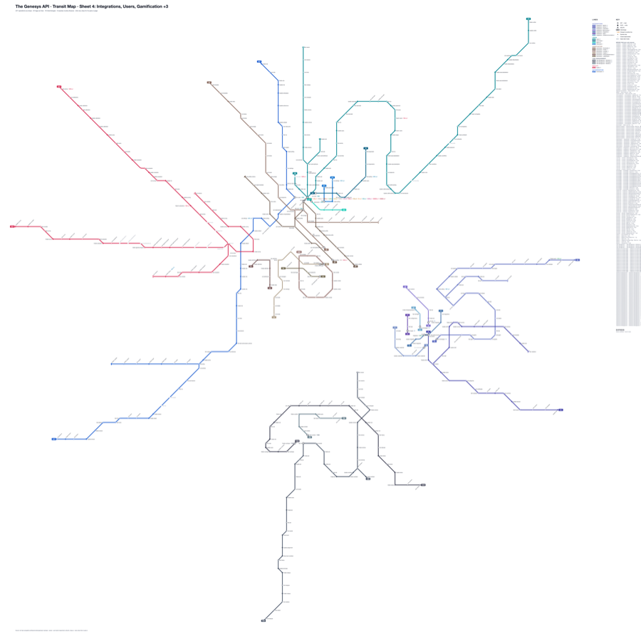
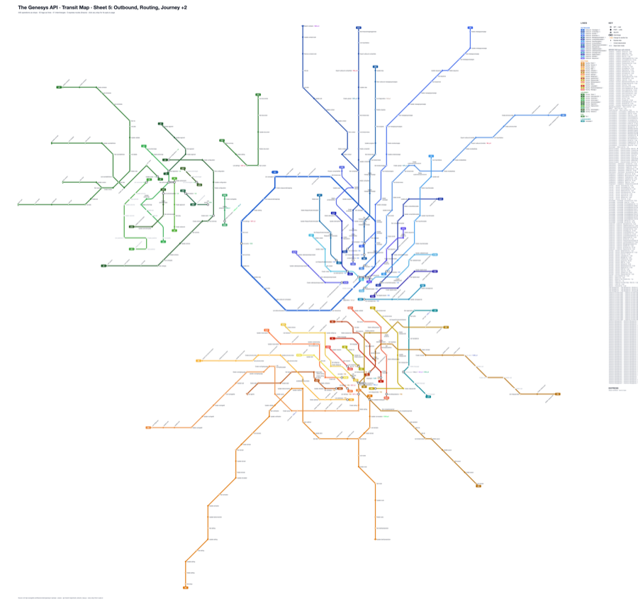
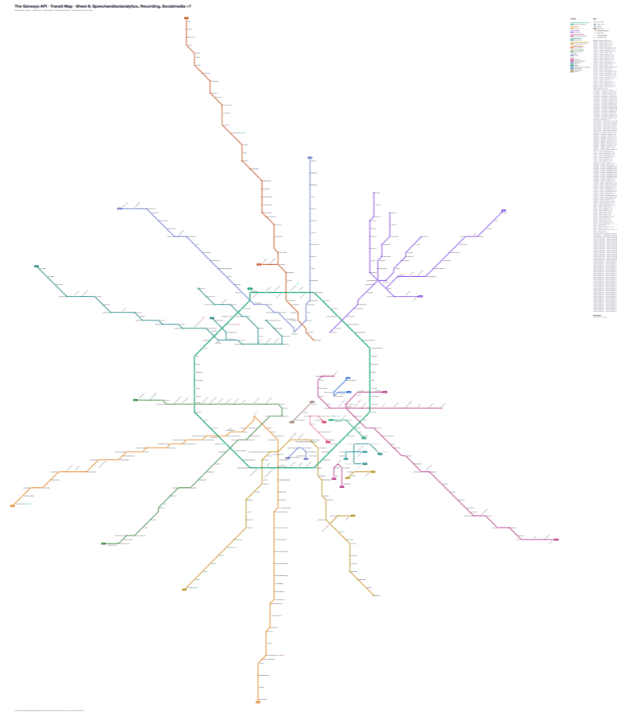
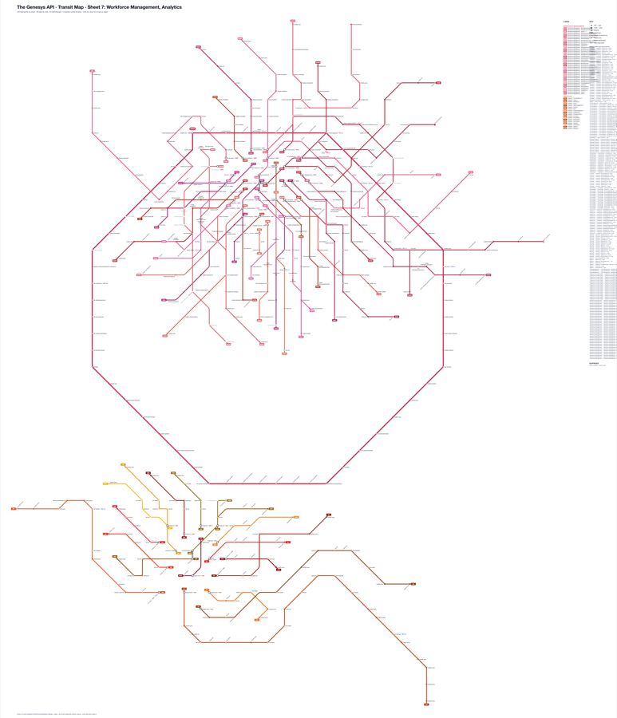
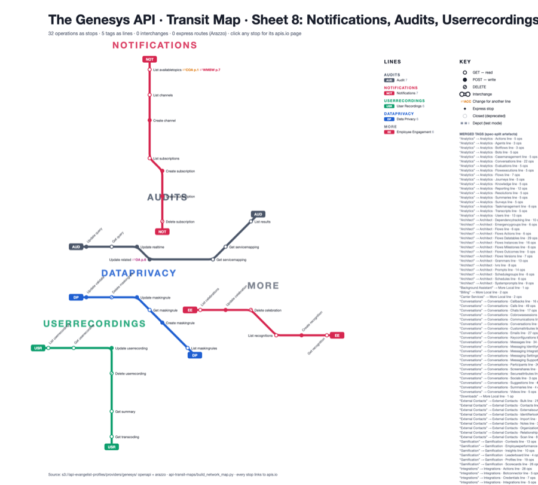

3163 operations on 8 sheets · products that interchange most share a sheet · on each sheet, "⇄CODE p.N" means change for that line on page N · every stop links to apis.io

p.1 Chats, Assistants, Presence +23
450 operations · 29 lines
- Chats
- Assistants
- Presence
- Voicemail
- Telephony
- Coaching
- Guides
- Webdeployments
- Responsemanagement
- Greetings
- Webchat
- Organizations
- Intents
- Scripts
- Alerting
- Scim
- Groups
- Oauth
- Processautomation
- Messaging
- Usage
- Screenmonitors
- License
- Teams
- Locations
- Diagnostics
Interchanges to p.2 (15), p.3 (14), p.4 (10), p.5 (5), p.6 (3), p.7 (2), p.8 (1)

p.2 Architect, External Contacts, Telephony Providers Edge +1
449 operations · 44 lines
- Architect
- External Contacts
- Telephony Providers Edge
- Contentmanagement
Interchanges to p.1 (15), p.3 (9), p.4 (6), p.5 (5), p.6 (4), p.7 (8)

p.3 Conversations, Knowledge
448 operations · 40 lines
Interchanges to p.1 (14), p.2 (9), p.4 (3), p.5 (5), p.6 (6), p.7 (4)

p.4 Integrations, Users, Gamification +3
447 operations · 22 lines
- Integrations
- Users
- Gamification
- Task Management
- Quality
- Authorization
Interchanges to p.1 (10), p.2 (6), p.3 (3), p.5 (4), p.6 (1), p.7 (3)

p.5 Outbound, Routing, Journey +2
446 operations · 43 lines
- Outbound
- Routing
- Journey
- Languages
- FAX
Interchanges to p.1 (5), p.2 (5), p.3 (5), p.4 (4), p.6 (3)

p.6 Speechandtextanalytics, Recording, Socialmedia +7
446 operations · 18 lines
- Speechandtextanalytics
- Recording
- Socialmedia
- Orgauthorization
- Businessrules
- Languageunderstanding
- More
- Casemanagement
- Identityproviders
- Learning
Interchanges to p.1 (3), p.2 (4), p.3 (6), p.4 (1), p.5 (3), p.8 (1)

p.7 Workforce Management, Analytics
445 operations · 56 lines
- Workforce Management
- Analytics
Interchanges to p.1 (2), p.2 (8), p.3 (4), p.4 (3), p.8 (1)

p.8 Notifications, Audits, Userrecordings +2
32 operations · 5 lines
- Notifications
- Audits
- Userrecordings
- Dataprivacy
- Employeeengagement
Interchanges to p.1 (1), p.6 (1), p.7 (1)